5 A Worked Example: Dating a Cemetery
A common challenge in archaeology is the excavated cemetery.
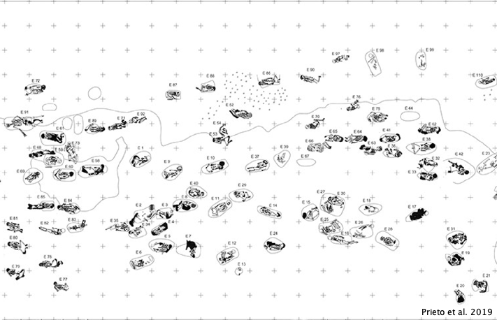
While in some ways cemeteries are unique - embodying uniquely simplified depositional processes, compared to domestic sites - in other ways they present some challenges common to many archaeological context. One of the most salient of those challenges is distribution in time. We might want to know (among other things):
- When did use as a cemetery begin?
- For how long was the area used as a cemetery?
- When did use as a cemetery end?
- Was there a period of more intense use, and if so when and for how long?
In the case of a cemetery the events are interments - but the same logic applies to construction, habitation, use of ceramics, etc.
5.1 Working with simulated (radiocarbon) data
We’ll work here mostly with simulated data, rather than real archaeological data. Why? So that we can evaluate our results against a known ‘reality’. In Exercise 1 we will posit a given pattern of activity that produced a burial population (e.g., regular burial over 200 years, or a slow start followed by a century of peak activity followed by a slow decline, etc.), generate some simulated radiocarbon data from that burial population (i.e., sample that population randomly, then simulate radiocarbon dates from those samples), then calibrate the dates and examine our results to see how closely we can reproduce the original distribution. Then - Exercise 2 - we will introduce some complications that reflect the messy reality of our radiocarbon samples, which for a variety of reasons that we’ll consider may not exactly reflect the dates that we want to know. Keep in mind throughout that there are two levels of stochastic effects here: both our selection of calendar dates and the radiocarbon dates that we simulate from those are random, and we would get slightly different results if we were to carry out the process again.
5.2 Distribution of events in time
Basic inferences about a cemetery are fundamentally problems of sampling and distribution:
- Uniform (x burials/year for y years)
- Normal - Single event (sacrifice,plague, etc - unlikely but not unimaginable)
- Exponential (frequency of use increasing over time)
- Negative exponential (frequency of use decreasing over time)
- actual distribution can be represented precisely by a pdf
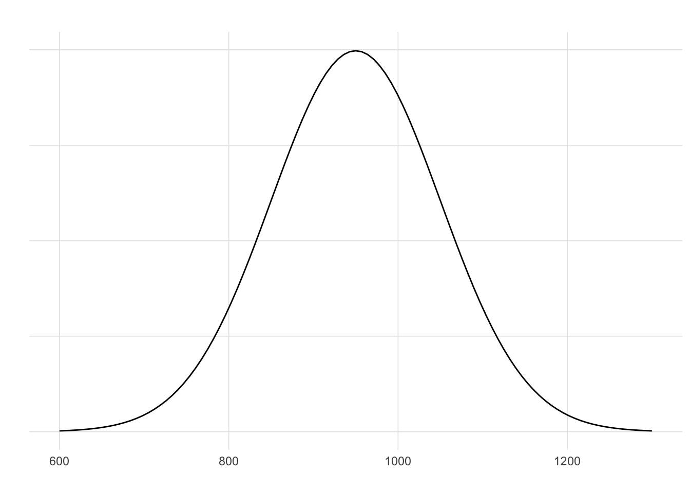
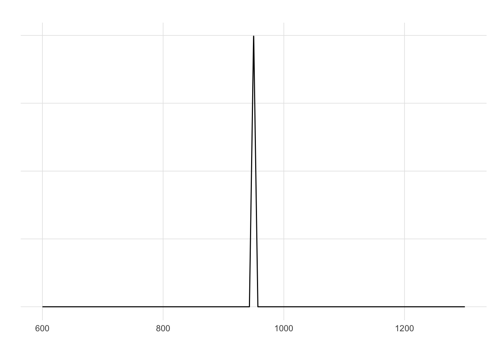
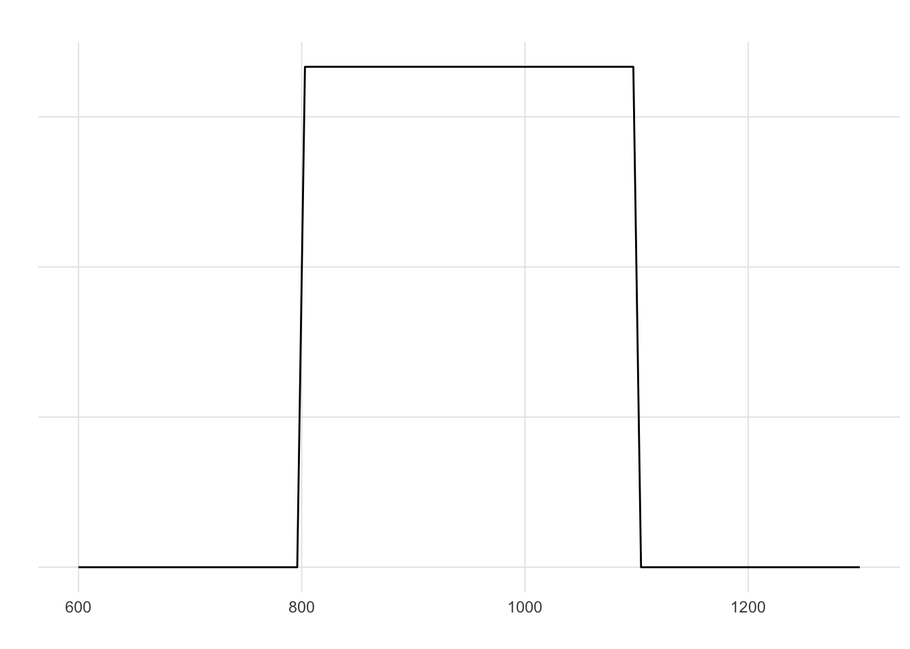
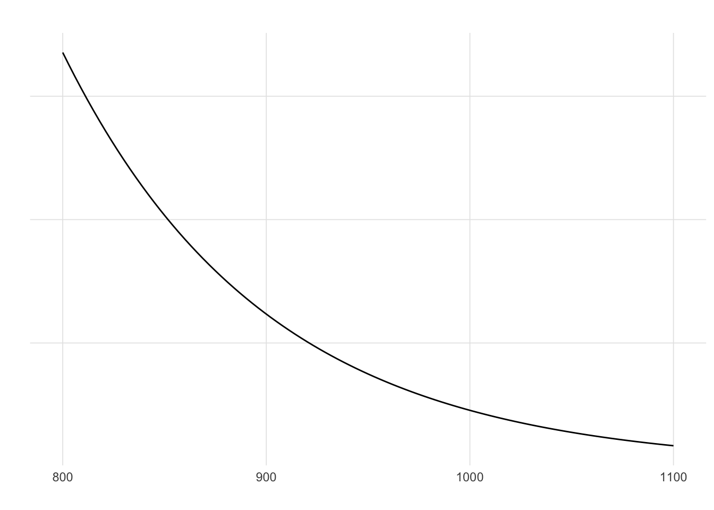
5.3 Archaeological approaches to a cemetery population
We might have something like this:
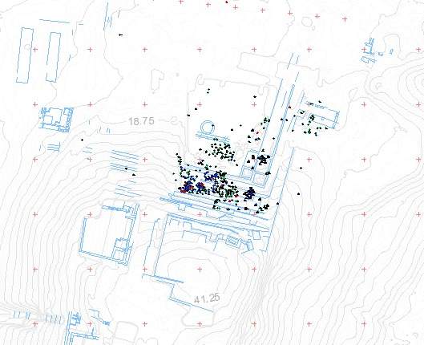
…and we might want to know (among other things):
- When did use as a cemetery begin?
- For how long was the area used as a cemetery?
- When did use as a cemetery end?
- Was there a period of more intense use, and if so when and for how long?
These are fundamentally problems of age estimation and sampling.
Likelihood of the age of a given sample is governed by this distribution.
With enough sample ages, can reconstruct distribution. How many is enough depends on the distribution and on how confident we want to be.
So…how do we estimate the ages of burials? What precision do we need?
5.3.1 Estimating the age of burials
Radiocarbon is of course not the only tool available for estimating the age of burials. More commonly - because cheaper and easier - we might use diagnostic material culture
Non-14c tools: typology, tpq and taq, dendro ( this isn’t an intro-to-arch class, so mostly we don’t need to catalog these…except to note that they’re probably going to be unsatisfying in terms of precision and reliability, and that they may be interesting sources of priors)
5.3.2 Sampling and precision
Our age estimates need to achieve some level of precision in order to be useful. That level depends on questions of interest. If all we care about is that cemetery use occurred between x and y, and we’re not worried about whether use actually fillled that span, then little precision and few samples are required. That is, if we can estimate the ages of a handful of burials, using whatever method, we can say with reasonable confidence that the cemetery was in use between a and b.
For example, let’s suppose that our cemetery was in use between 800 - 1100 CE, and that every year within that span, 5 individuals were interred. This would give us a burial population of 1500 individuals, uniformly distributed throughout that span. Let’s further suppose that each of these individuals conveniently has their date of death - in some format that we can decipher - inscribed on a sherd buried with them. Using that, we catalog the ages of five burials.
| ages |
|---|
| 1074 |
| 1081 |
| 886 |
| 1049 |
| 993 |
Can we now answer our questions about the cemetery? i.e., when it was first used, and when it fell out of use? In fact, even with the ability to very precisely date burials, our best estimate of the span of use of the cemetery is 886 - 1081 CE - we are limited by our small sample.
What if we take a sample four times bigger, of 20 individuals? A list that long starts to get difficult to work with, so we’ll plot them instead, including our original 5 in red.
| ages |
|---|
| 1074 |
| 1081 |
| 886 |
| 1049 |
| 993 |
| 956 |
| 1021 |
| 840 |
| 997 |
| 1012 |
| 937 |
| 1016 |
| 1080 |
| 877 |
| 939 |
| 1082 |
| 1093 |
| 835 |
| 942 |
| 968 |
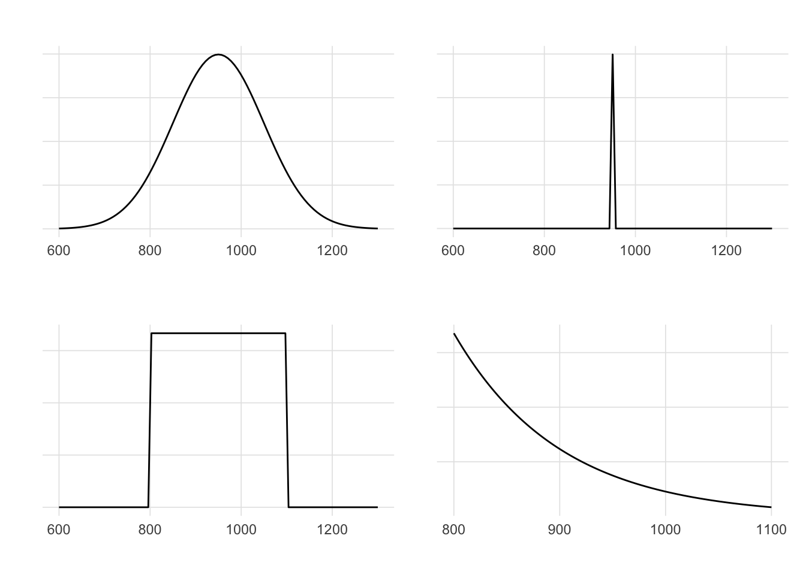
Our estimate now would be that use of the cemetery began in 835 CE and lasted until 1093 CE. We’re having trouble capturing the actual beginning and ending just because the odds are only 5:1500 that we’ll get a burial from any given year.
Of course, it’s wildly unlikely that we’ll be able to estimate the age of each burial with annual precision. Does it matter? What if we take those same 20 individuals, and instead make the (still optimistic) assumption that we have a reliable high-precision ceramic sequence, which we can use to estimate the age of any burial within phases of 40 years.
| ages |
|---|
| 1080 |
| 1120 |
| 920 |
| 1080 |
| 1000 |
| 960 |
| 1040 |
| 840 |
| 1000 |
| 1040 |
| 960 |
| 1040 |
| 1080 |
| 880 |
| 960 |
| 1120 |
| 1120 |
| 840 |
| 960 |
| 1000 |
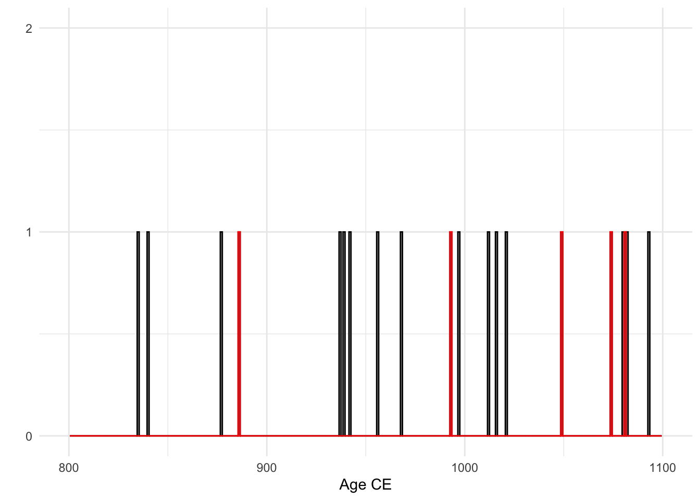
Figure 5.1: Sampling from burials uniformly distributed between 800 - 1100 CE. Burial years in black/red; estimated to nearest 40 years in grey.
Now we might suggest that cemetery use began around 840 and ended by about 1120. We might even think about suggesting - wrongly, it turns out - that use increased over time. And what might our interpretion be if we had only those original five individuals to work with?
Of course, 40 years would be remarkably high precision for ceramic phases, and if we had that, we might not be too interested in radiocarbon. What happens if we think more realistically (for many archaeological scenarios) about ceramics that can be identified to within 100 or 200 years?
| ages |
|---|
| 1200 |
| 1200 |
| 1000 |
| 1200 |
| 1000 |
| 1000 |
| 1200 |
| 1000 |
| 1000 |
| 1200 |
| 1000 |
| 1200 |
| 1200 |
| 1000 |
| 1000 |
| 1200 |
| 1200 |
| 1000 |
| 1000 |
| 1000 |
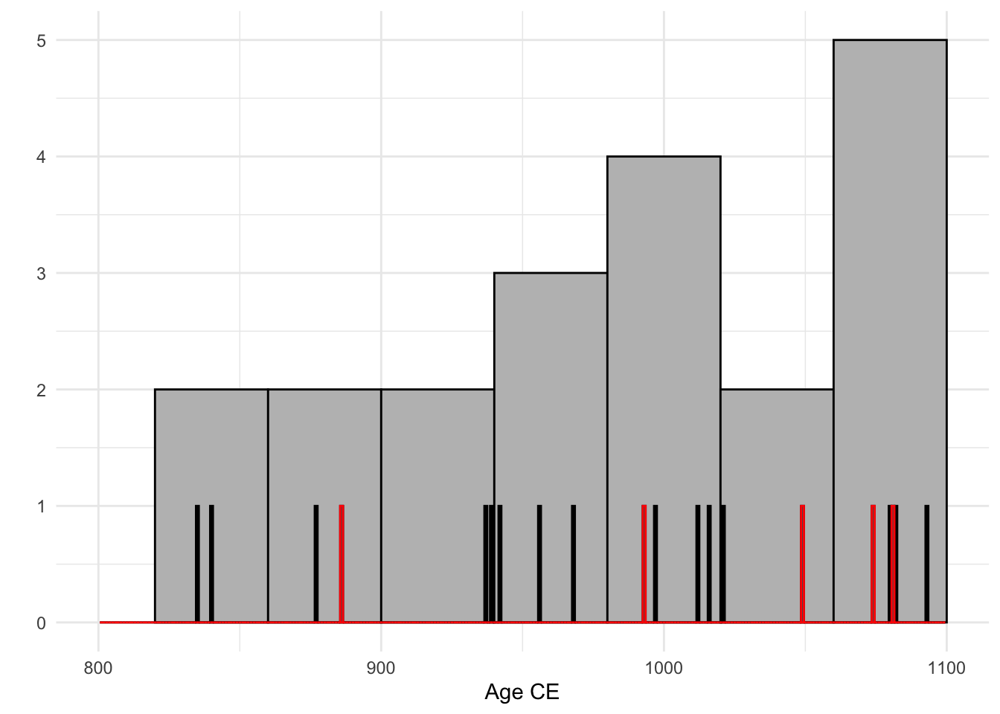
Figure 5.2: Sampling from burials uniformly distributed between 800 - 1100 CE. Burial years in black/red; estimated to nearest 200 years in grey.
Here we would likely produce some interestingly wrong interpretations. The low precision with which we can date burials would suggest to us that cemetery use began as early as 700 CE, while that low precision combines with sampling effects to lead us to suggest an increase in use over time, ending at 1100 CE (a date which we might also have gotten wrong, had our ceramic chronology not happened to have a phase that ended then).
We could carry on, varying sample size and precision, and exploring how well we felt able to describe cemetery use. Since our goal here is to be thinking about radiocarbon, we won’t pursue that, but let’s take a quick look at what happens if we consider a different model of cemetery use. What if, rather than 5 individuals/year for 300 years, cemetery use started slowly, peaked in 950, and then slowly declined?
| ages |
|---|
| 1019 |
| 922 |
| 968 |
| 982 |
| 970 |
| 945 |
| 1026 |
| 945 |
| 1051 |
| 947 |
| 1015 |
| 1064 |
| 881 |
| 936 |
| 943 |
| 982 |
| 936 |
| 817 |
| 828 |
| 1016 |

Figure 5.3: Sampling from burials normally distributed between 800 - 1100 CE. Burial years in black; estimated to nearest 40 years in grey.
Here we might suggest that cemetery use began around 840 and ended by about 1080. We can also detect a pattern of increased use ca. 950 - 1000 CE.
We might achieve something similar, if the span identified in regional chronological schemes with Lambayeque material culture were 800 - 1100 CE, simply by sampling a single burial and identifying some diagnostic piece of material culture. But what if ceramic/cultural chronology is insufficiently precise…or inaccurate? What if the span identified in regional chronological schemes with Lambayeque material culture were 700 - 1200 CE, rather than 800 - 1100 CE…or 950 - 1200 CE? We would be badly wrong, and in a way that mattered for our interpretation of both the site and for regional patterns.
Keep in mind as we address radiocarbon dating that we are focusing on the accuracy and precision with which we can estimate ages. As we’ve just seen, though, all the accuracy and precision in the world won’t (and can’t) address the uncertainties created by small samples.
Keep in mind also that these dated events - burials, in the case of our cemetery - could as easily be house abandonments, or offerings, or discard of recognizable (diagnostic) ceramics.
5.4 Approaching a cemetery population using radiocarbon
Radiocarbon promises to solve some of these problems for us; under ideal circumstances we might be able to produce age estimates for date-of-interment accurate within 20-30 years for each individual. Supposing that we do settle on radiocarbon as a useful method that might offer us a solution to the imprecision of our ceramic chronology. What can we date, what should we date, and what can we do with the results? If we produce 20 radiocarbon age estimates on 20 interments with which to approach our questions about cemetery use - what does their distribution look like? To assess that distribution, we need to understand those radiocarbon age estimates. We’ll take a quick look here at how we get from measured carbon isotope ratio to radiocarbon age to calendar age, and then focus on what you, as a practicing archaeologist, might receive from a lab to which you’ve submitted samples. We’ll begin simply, and then introduce several issues that might complicate our interpretation of radiocarbon ages.
5.4.1 What can/should we date?
Let’s consider a single interment, examining the potentially dateable material available.
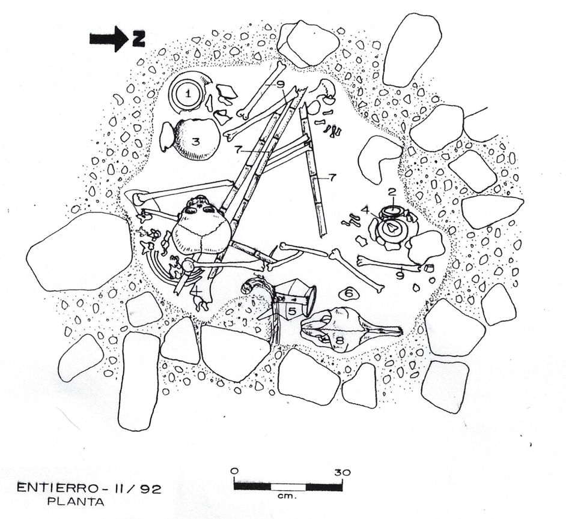
Figure 5.4: Entierro 11/92, Huaca Cao Viejo (Complejo Arqueológico El Brujo archives).
There are two guiding questions here.
1. What is the event whose age we wish to know (the target event)?
The answer (usually) is the depositional event - the moment of burial. Clarity about this is important because we might also for various reasons be interested in the moment of death, a moment of manufacture of some included material culture, a moment of disturbance of the burial, etc. With respect to our overarching questions about the cemetery, however, it’s most likely that what we want is the date of interment, which then is our target event.
2. For which materials from this context might we be able to estimate an age using radiocarbon?
We are fortunate in that there are multiple dateable materials in this context (a luxury!).
- ceramics may contain organic material (remnants of temper) and/or absorbed organic residues (1/5)
- gourd (Lagenaria siceraria) (3)
- textile fragment (6)
- wood (algarrobo, Prosopis pallida) (2)
- marine shell (4)
- human bone (9)
- camelid bone (8)
- caña brava (Gynerium sagittatum) (7)
- charcoal is not visible in the sketch, but because it’s such a commonly dated material let’s assume that some unidentified wood charcoal is present
Identifying these materials as potentially dateable, and clearly understanding what results they’re likely to produce, takes us back to the fundamentals of \(^{14}C\) as a dating method.
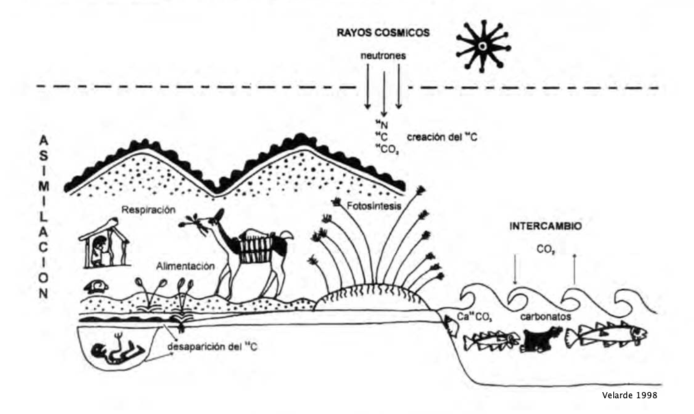
Figure 5.5: The carbon cycle.
The key points - you can review the method in detail elsewhere; see Additional recommended readings - are:
- atmospheric \(^{14}C\) - an unstable isotope of carbon that will radioactively decay - is produced by cosmic ray bombardment
- \(^{14}C\) - like other isotopes of \(C\), \(^{12}C\) and \(^{13}C\) - oxidizes to form \(CO_{2}\)
- that \(CO_{2}\) disperses through the atmosphere, and then enters terrestrial and marine food chains when photosynthesized by plants
- the carbon that plants and animals use to build tissue is derived from consumption of those plants - or of animals that consume those plants
Because this process is relatively rapid and because the atmosphere mixes, the ratio of carbon isotopes (e.g., \(^{14}C:^{13}C\)) in plant and animal tissue is in equilibrium with the ratio in the atmosphere at any given time. That is, in the illustration above, the proportion of the carbon that is \(^{14}C\) is the same in the atmosphere, the grass that photosynthesizes atmospheric \(CO_{2}\), the camelid that eats the grass, and the human hunter that eats the camelid.
When an organism dies, it ceases to incorporate carbon into its tissue, and the \(^{14}C\) incorporated into tissue while it was alive begins to radioactively decay. As a result, the proportion of \(^{14}C\) in that organism begins to decrease. Because that rate of decay is known, is unaffected by environmental factors, and has not changed over time - the half-life of \(^{14}C\) is 5730±40 years - the ratio of remaining \(^{14}C\) to \(^{13}C\) can be measured and used to estimate the amount of time that has passed since the organism stopped incorporating carbon. It’s that measurement that a radiocarbon lab reports to the consumer, adjusted by convention to a BP timescale (‘before present’, where ‘present’ is fixed at 1950 CE).
5.4.2 What happens when we submit one of those samples to a radiocarbon laboratory?
Laboratory procedures are intended to achieve two goals: 1) to make sure that the sample being measured consists exclusively of the material whose age is of interest, and 2) to accurately and precisely measure the radiocarbon age of the sample. What happens after that - how that radiocarbon age relates to the target event, and what that means for your questions - is your problem.
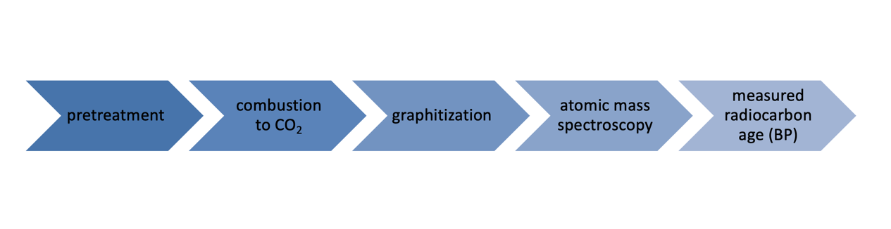
Figure 5.6: Sample processing in AMS radiocarbon analysis.
Pretreatment (see Wood 2015, 63–65) is the process in which chemical and physical means are used to remove potential contaminants from the sample. Contaminants, even small amounts of which can significantly affect age estimates (see Blaauw’s ‘Contaminate-a-date’ app, found on his webpage [https://maarten14c.github.io/] under Software and animations / impact of contamination on C-14 ages) - are materials other than the sample, which might introduce carbon of different age. This can range from manual removal of macroscopic rootlets from charcoal to microscopic inspection to acid and base washes. Following pretreatment samples are combusted, converted into graphite and pressed into pellets that be analyzed in the atomic mass spectrometer, in which the carbon isotopes are separated by weight and counted. The measured ratio that results forms the basis of the calculated radiocarbon age that the lab reports. That radiocarbon age will look something like this example: LabID-XXX | 1100 ±40.
The three components here are not the only things that matter, but they are the fundamental ingredients without which the date is not useful: the unique laboratory identifier, the radiocarbon age, and the estimated error (reported by convention as 1\(\sigma\)). That error represents the uncertainty with which the lab calculates the radiocarbon age, which is to say that the actual value is most likely to be 1100, is very probably close to that value, but might be as low as 1020 or as high as 1180, if we account for ~95% of the probability distribution).
That measured age looks like this, if we plot it as a probability curve.
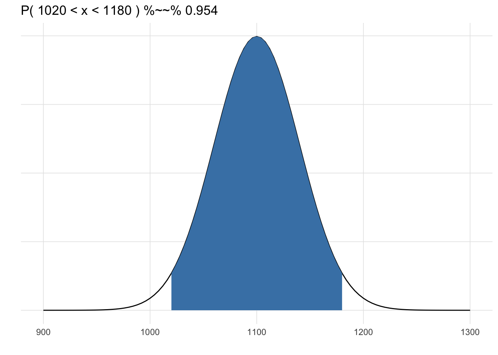
Figure 5.7: 2-sigma distribution of 1100 ±40.
This is quite a manageable amount of uncertainty, and it’s not hard to imagine that if we had 20 values like this, we could plot them on a timeline, producing something not unlike the plots that we were looking at above (where the uncertainty around each age is uniformly distributed, which is to say that if we know that an age falls in the 1020 - 1060 CE bin, it’s equally likely to be any of the ages in that bin). However, because atmospheric production of \(^{14}C\) has fluctuated over time - varying depending on cosmic radiation, sometimes in dramatic ways that have some neat implications for archaeological dating (Price 2023; Dee and Pope 2016) - the same calculated radiocarbon age might have been produced by a sample originating in multiple different calendar years. Thanks to the efforts of the international community of radiocarbon researchers, this problem can be managed, because we can describe fairly precisely exactly how atmospheric radiocarbon has varied over the last 14000 years. These descriptions - slightly different for the northern and southern hemisphere because atmospheric mixing is in fact neither complete nor instantaneous (see (Hua et al. 2022)) - are the calibration curves that are periodically updated by the community: the current versions are IntCal20 (Reimer et al. 2020) and SHCal20 (Hogg et al. 2020). These curves are measures - compiled by radiocarbon-dating many known-age tree ring samples at multiple labs - of changing atmospheric radiocarbon over time (to explore the underpinnings of IntCal20, see Maarten Blaauw’s Shiny app).
When we calibrate a radiocarbon date, we are asking, “In what calendar year(s) might the amount of 14C that we’ve measured been produced?” The answer depends on the calibration curve. The result is an irregular curve (a probability density function [pdf]) that describes the range of calendar dates that might have produced our conventional radiocarbon age. Because the calibration curve is not smooth, this probability is not evenly distributed (unlike, for example, the symmetrical uncertainty described by the ‘±’ in the conventional radiocarbon age). This pdf is usually summarized by referencing the 95% high-density region (HDR), which describes the highest parts of pdf, summing them until 95% (or whatever desired range) of the area under the curve is captured. Because of the irregularity of the pdf, these may not be contiguous.

Figure 5.8: Calibrated age of LabID-XXX (1100 ±40). Calibrated using the R package rice (Blaauw 2024).
On the y-axis we can see our conventional radiocarbon age, plotted as the normal distribution described by that value and the associated error that the lab reports (reflecting measurement uncertainty). In green is the calibration curve - in this case IntCal20 - and on the x-axis is the probability density function that describes the span of time during which our sample might have been produced (over which, notably, it’s more likely to have been produced in some years than in others). The HDR is shaded, and described in the upper right corner (most of the likelihood - 93.1% of the upper 95% - falls in the span 878 - 1024 CE, but there’s a 1.4% chance that our sample was produced between 776 and 783 CE).
Maarten Blaauw has produced this animated visualization to illustrate how we get from the conventional radiocarbon age to calibrated pdf:
When you calibrate a date in OxCal you’ll get something similar, or you can produce plots exactly like this in R using the rice package, or using Maarten Blaauw’s Shiny app for calibration.
5.4.3 Calibrating a date in OxCal
To calibrate a single date in OxCal, launch the browser-based program [https://c14.arch.ox.ac.uk/oxcal/OxCal.html], and log in when prompted. Click either of the ‘Calibrate’ buttons, and fill in the name of the sample (usually the lab ID, though you may sometimes find it convenient to use other names), the conventional radiocarbon age, and the measurement error (see below).
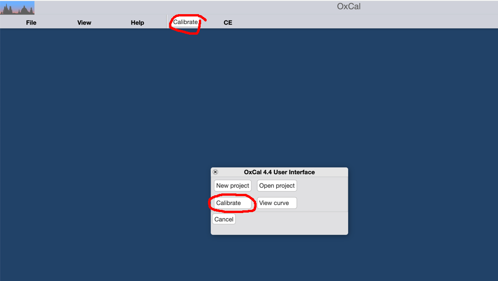
Figure 5.9: Calibrating a single date in OxCal.
This will produce a plot similar to the one above, which illustrates the radiocarbon determination on the y-axis, the calibration curve, and, on the x-axis, the calibrated date that results from the intersection of those two. The HDR is also marked (by the brackets under the pdf) and enumerated at the upper right. The styling of this plot can be adjusted using the ‘Edit’–>‘Format’ drop-down menu.
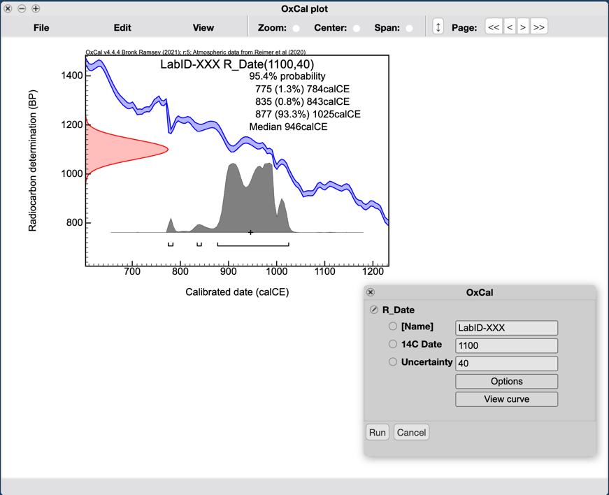
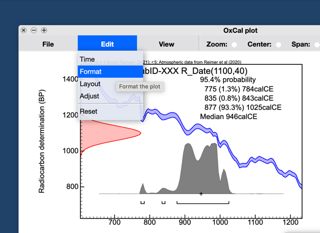
Figure 5.10: Calibrated result from OxCal.
5.4.4 Calibration curves
As noted above, calibration is necessary because atmospheric radiocarbon has varied over time. It also varies in space (Fig. 5.11), driven at global scales by the contrast in relative land area in the northern and southern hemispheres and the relative segregation of the air masses in those hemispheres (see Marsh et al. 2018, 926–27 for an overview). Two distinct calibration curves are the result: IntCal for the northern hemisphere and SHCal for the southern; current versions, published in 2020, are IntCal20 (Reimer et al. 2020) and SHCal20 (Hogg et al. 2020). These are only modestly different (Figure 5.12), but that slight difference can affect where the radiocarbon determination intersects the calibration curve (see Fig. 5.13, where the bulk of the probability shifts only slightly, but the tail moves from pre-900 CE to post-1050 CE).
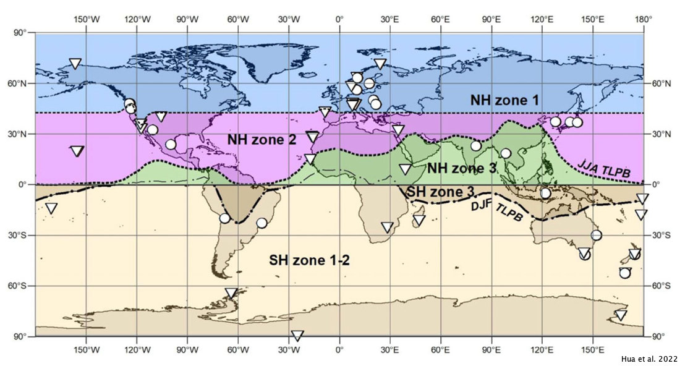
Figure 5.11: Hua and colleagues (2022) illustrate 20th-21st century variability in atmospheric radiocarbon, based on atmospheric CO2 sampling (triangles) and Δ14C tree-ring records (circles).

Figure 5.12: IntCal20 and SHCal20 from 1000 BCE to 1000 CE. Plotted using the R package rice (Blaauw 2024).
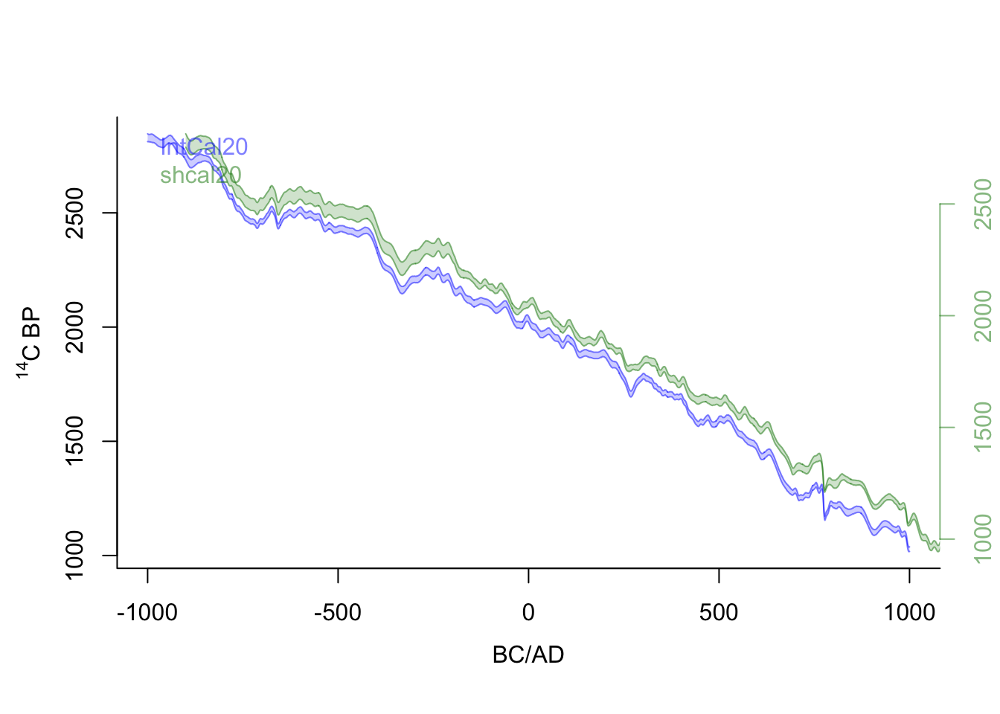
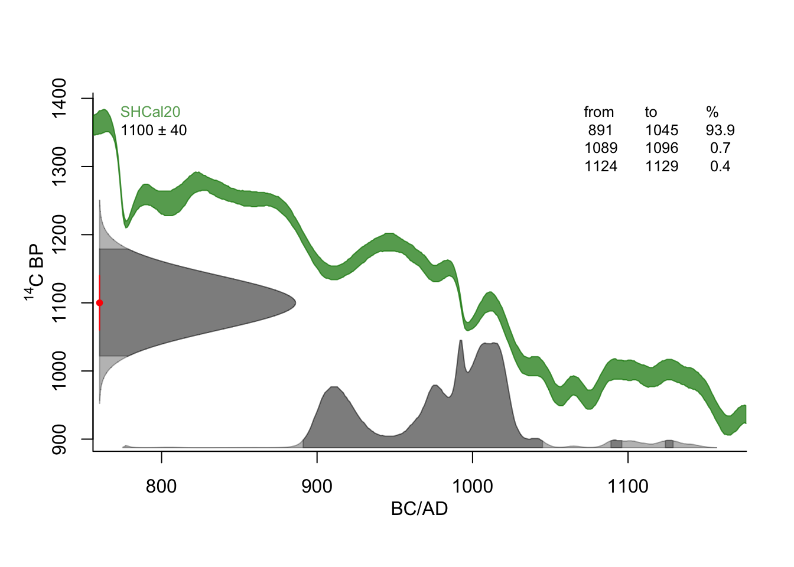
Figure 5.13: Calibrated age of LabID-XXX (1100 ±40). Calibrated using the R package rice (Blaauw 2024).
5.4.4.1 Specifying a calibration curve in OxCal
You can select calibration curves in OxCal by clicking on ‘Options’ and then ‘Calibration’ (Fig. 5.14).
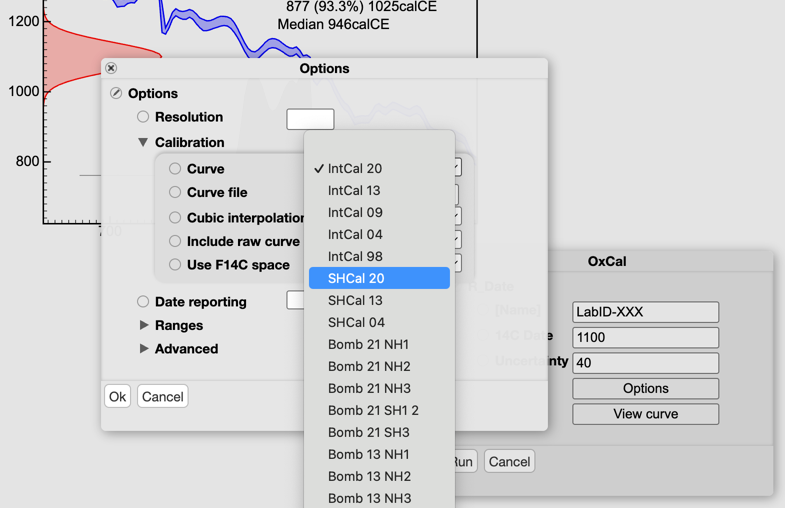
Figure 5.14: Calibration curve selection in OxCal.
To juxtapose two versions of the same date calibrated with different curves in OxCal, we need a more complicated interface than what we use to calibrate a singe date, because we need to enter more information than just a radiocarbon determination and associated error. To open such an interface, select ‘File’–>‘New’.
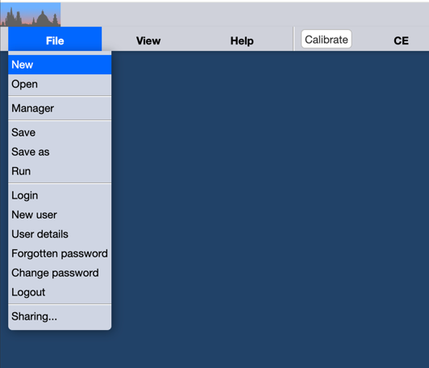
Figure 5.15: Opening a new project in OxCal.
By default the ‘Input’ window that opens shows the ‘Model’ view. You can (and should) change this using the buttons at the lower left (Figure 5.16). The ‘List’ view shows you the structure of your model - we’re building models now! - and the ‘Code’ view shows you what’s under the hood. Toggling back and forth between those is a good way to get familiar with the actual code. In your new ‘Input’ window, select the dot below and indented from Plot(), and then click on ‘Insert’, and, in the pop-up that appears, R_Date. This will pop up a familiar interface for entering a radiocarbon date (Figure 5.17). Once you’ve entered that date, click ‘Insert’, and it will appear in the ‘Input’ window. Do this twice, changing the name (e.g., “LabID-XXX.1” and “LabID-XXX.2”) so that you can tell the two dates apart. Before we run this model, we need to specify that we want to use a different calibration curve for each date. Select the first date by clicking on it in the ‘Input’ window (it will turn blue), and select ‘Tools’ –> ‘Curves’, then ‘Atmospheric’, and finally ‘IntCal20’ (Figure 5.18). A new line will appear above your date, which reads Curve("IntCal20","intcal20.14c"). Now highlight the second date and repeat the process, but selecting ‘SHCal20’. You should now have four lines in your model (inside the ‘Plot’ command). OxCal reads from top to bottom, so that when you run the code, it will apply the last curve it’s found to the next date it encounters.
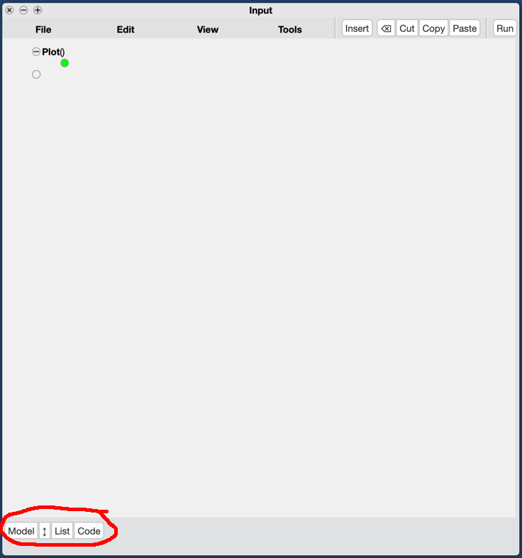
Figure 5.16: Changing views in the OxCal ‘Input’ window.
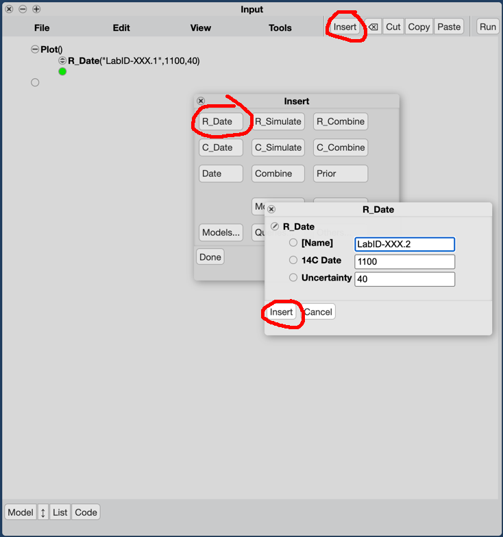
Figure 5.17: Inserting dates in the OxCal ‘Input’ window.
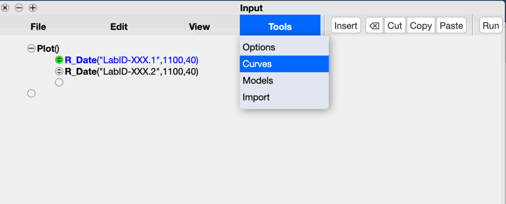
Figure 5.18: Inputting curves into an OxCal model.
The ‘Run’ button at the upper right of the ‘Input’ window (or selecting ‘File’–>‘Run’ from the dropdown) will run your model - which is to say, in this case, calibrate the two radiocarbon dates you’ve entered, using the two different curves that you’ve specified. The results will appear in a new window (‘Table’). Select ‘View’–>‘Plot dates’ to see these results and ‘View’–>‘Plot stacks’ to overlay them. Plots will appear in a new ‘OxCal plot’ window, where results can be manipulated using the ‘Edit’ dropdown and downloaded (as .pdf, .png, or .svg image files) with ‘File’–>‘Save as’.
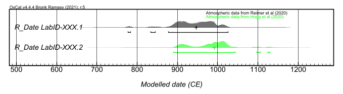
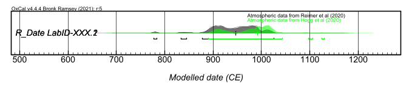
Figure 5.19: Plotting results.
5.4.4.2 Calibration at low latitudes
As Figure 5.11 implies, it’s not always obvious which calibration curve is appropriate, particularly at tropical latitudes. Atmospheric circulation patterns also vary seasonally: note that Fig. 5.11 illustrates two different - December–February [DJF] and June–August [JJA] locations for the tropical low pressure band [TLPB], which Hua and colleagues prefer to the inter-tropical convergence zone [ITCZ] because it can be more precisely described in terrestrial areas. This is of particular importance for South American archaeology (Fig. 5.19); note how far south the TLPB moves during the austral summer. Atmospheric circulation patterns have also varied over time, since the location of the ITCZ is closely linked to climate changes (see, e.g., McGee et al. 2014).
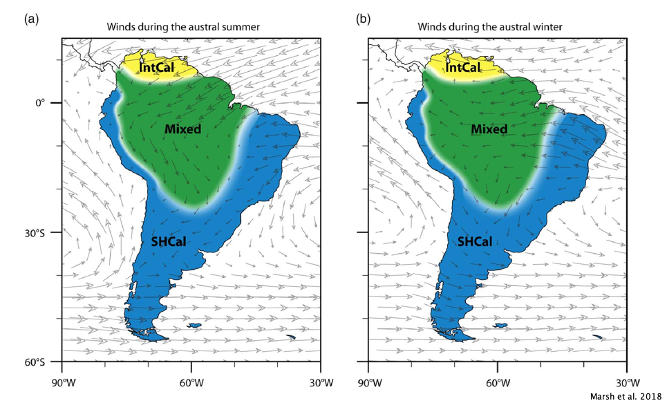
Figure 5.20: Proposed calibration curves in South America. Note that these are not intended to be spatially precise.
As a result, for many locations at low latitudes there will be some uncertainty about which is the appropriate calibration curve. If we don’t know, we shouldn’t pretend that we do, or we will produce inaccurate age estimates. Marsh and colleagues (2018) offer a practical solution that can be applied in OxCal - using a mixed curve that might be any mix of IntCal and SHCal. This will add some uncertainty to age estimates, but if we in fact aren’t sure which calibration curve is appropriate, then there should be some additional uncertainty. We can illustrate this by adding a third version of our 1100 ±40 date and specifying a mixed calibration curve. We’ll do that through the ‘Code’ view, to get an idea of what raw OxCal code looks like.
5.4.5 OxCal code
OxCal code, called Chronological Query Language (CQL; the current version is CQL2), built on javascript. If you click on the ‘Code’ button at the bottom left of the ‘Input’ window, you’ll see this raw input, which looks like this:
Plot()
{
Curve("IntCal20","intcal20.14c");
R_Date("LabID-XXX.1",1100,40);
Curve("SHCal20","shcal20.14c");
R_Date("LabID-XXX.2",1100,40);
};It can be much more efficient to edit this directly once you’re familiar with OxCal code, but - as with any code language - that requires a certain level of comfort and careful attention to detail (dropping a ; or not closing a ( will have dire consequences). So you can see what’s possible, though, let’s add two lines: a new curve, and a third iteration of that same date.
Plot()
{
Curve("IntCal20","intcal20.14c");
R_Date("LabID-XXX.1",1100,40);
Curve("SHCal20","shcal20.14c");
R_Date("LabID-XXX.2",1100,40);
Mix_Curve("Mixed","IntCal20","SHCal20",U(0,100));
R_Date("LabID-XXX.3",1100,40);
};Running that model again will produce a third pdf; we can visualize all three with ‘View’–>‘Plot dates’. To change the color of the third plot, click on the icon in the ‘Edit’ column in that row in the ‘Table’ window. The ‘Color’ field in the pop-up that appears will reocgnize basic English color names (“blue”, “red”, etc).
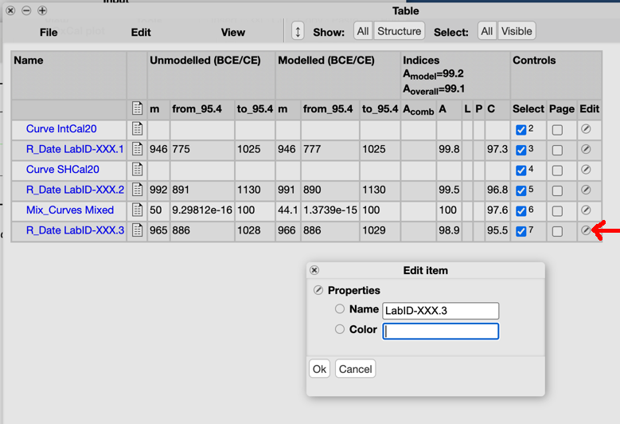
Figure 5.21: Changing the color of a plotted pdf.
The results, not surprisingly, look like a combination of our first two efforts.
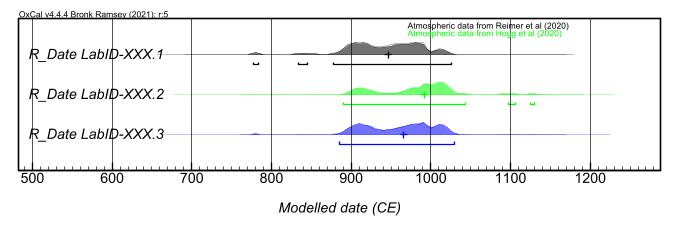
Figure 5.22: Plotting results.
From here on, we’ll assume that our cemetery is in fact in the Chicama Valley on the Pacific Coast of Peru, where it’s clear that the southern hemisphere curve is appropriate. With that in mind, let’s return to our sample of 20 burials. This time, rather than considering age estimates based on ceramics or other diagnostic material culture from those 20 burials, we’ll examine radiocarbon dates.

5.4.5.1 Importing data into OxCal
If you still have the previous model in your ‘Input’, either delete it or open a new model. Efficiently calibrating multiple dates is extremely useful. Open bur20sim.csv however you like (MS Excel or something like it will work fine). Select and copy all of the rows (excluding the column names). Return to OxCal, and in the ‘Input’ window, choose the ‘Tools’–>‘Import’ dropdown (Fig. 5.XX). In the ‘Import’ window that pops up, make sure that ‘Command’ is selecting “R_Date”, and ‘Separator’ is “Tab”, and paste your data into the ‘Data’ space (column order matters; OxCal expects Name | Radiocarbon age | Error). When you click the ‘Insert’ button, these will be added to your model at whichever dot you have selected in the ‘List’ view. Make sure that you insert a line specifying SHCal20 as the curve at the beginning, so that your complete code looks like this:
Plot()
{
Curve("SHCal20","shcal20.14c");
R_Date("LabXX-01",896,31);
R_Date("LabXX-02",940,36);
R_Date("LabXX-03",1188,29);
R_Date("LabXX-04",896,32);
R_Date("LabXX-05",1106,30);
R_Date("LabXX-06",1087,26);
R_Date("LabXX-07",1012,27);
R_Date("LabXX-08",1148,31);
R_Date("LabXX-09",1094,29);
R_Date("LabXX-10",1047,31);
R_Date("LabXX-11",1128,36);
R_Date("LabXX-12",990,31);
R_Date("LabXX-13",951,31);
R_Date("LabXX-14",1197,29);
R_Date("LabXX-15",1134,33);
R_Date("LabXX-16",989,30);
R_Date("LabXX-17",946,33);
R_Date("LabXX-18",1185,15);
R_Date("LabXX-19",1143,29);
R_Date("LabXX-20",1141,31);
};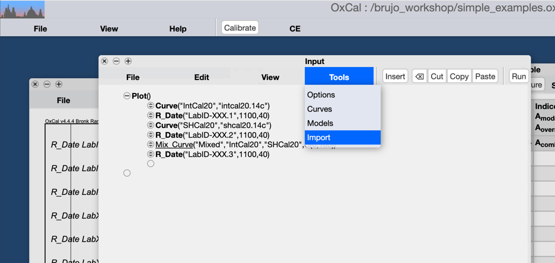
Figure 5.23: Importing multiple dates.
Calibrate these dates (‘Run’) and then plot them (‘View’–>‘Plot dates’ and/or ‘View’–>‘Plot stack’). The stack helps visualize the patterns that you may see in the individually plotted pdfs.
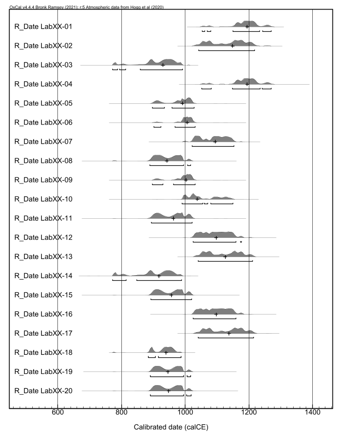
Figure 5.24: Plotting multiple dates.
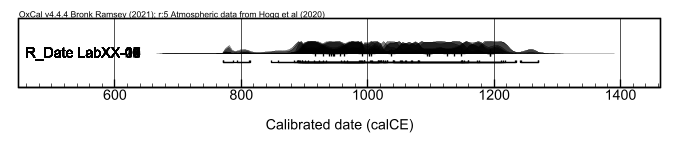
Figure 5.25: Plotting multiple dates.
Using these plots of calibrated dates, let’s return to our questions about the cemetery:
- When did use as a cemetery begin?
- For how long was the area used as a cemetery?
- When did use as a cemetery end?
- Was there a period of more intense use, and if so when and for how long?
Visual inspection of calibrated \(^{14}C\) determinations.
As Bayliss and colleagues (2007, 8–9) discuss in detail, visual inspection of assemblages of radiocarbon dates almost inevitably leads to overestimation of the spans of time that produced those assemblages. If we take the maximum and minimum of the 95% HDRs, we get 666 - 1257. A similar but less precise estimate - the one most archaeologists would probably give - based on visual inspection of the calibrated ranges would likely be something like, “about 850 CE to a bit after 1200 CE”.
But in fact our simulated \(^{14}C\) ages are from samples drawn from a uniform distribution covering the interval 800 - 1100 CE.
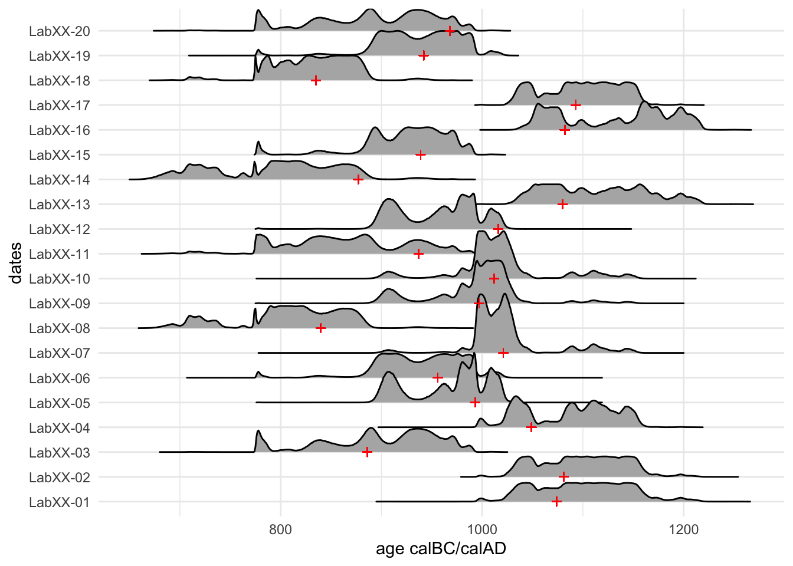
Figure 5.26: Calendar dates and simulated radiocarbon dates.
5.4.5.2 Bounded Phase models in OxCal
This problem of overestimation stems from the visual impact of the uncertainty plotted as the pdf of a calibrated date, which is often (mis)interpreted as a span of time rather than a distribution of probability. That is, if we treated these distributions as indicated a span within which activity occurred, we’d probably be mostly right. When we try to interpret it as a span that indicates when use began and ended, then we’re very likely to be wrong. OxCal addresses this problem of overestimation with the ‘bounded phase model’. A bounded phase model treats the specified dates as a sample drawn from (by default) a uniform distribution that is defined by the boundaries. In practice this means taking into account the fact that a) the limited precision with which we can describe dates produces additional scatter, and b) it’s unlikely to draw many samples from the extremes of a distribution. This assertion of a uniform prior is fundamental to OxCal’s logic, and underlies some of its most important results: improved estimation of timespans in the vast majority of cases. If we have no basis from which to assert some other parent distribution of our samples, then a uniform (“uninformative”) prior is very likely the best choice. However, if there’s reason to think that another prior better describes the population of dateable events that we have sampled - in our cemetery case, we might for instance suspect based on ceramic styles that the frequency of interments increased over time - then it’s a good idea to explicitly incorporate that information by asserting it as a prior (i.e., by modeling a non-uniform phase; more on that later).
It almost certainly gives us a more realistic interpretation of the given information although we have made an extra (and possibly difficult to substantiate) assumption. To use no model at all is in fact to assume that all of the events are truly independent; this is in effect a model in itself, and in many cases a very unreasonable one. (Bronk Ramsey 1998)
In practice this means adding three commands (incidentally, you can review OxCal’s commands by selecting ‘Help’ and then ‘Command reference’): Sequence, Boundary, and Phase. Sequence asserts that the events that follow (within the {} that follow, in the code) are in chronological sequence; Boundary commands are used in pairs to define the events that should be considered as sampled from a discrete distribution (by default a uniform one, as noted above); Phase describes (also within the {}that follow) events whose relative sequence is unknown (if we knew - based on, e.g., stylistic grounds - that one dated burial was the earliest, we could place it before the Phase command in the sequence). So, the entire sequence laid out below can be read as, “here are a pair of sequential boundaries; these describe a collection of dated events (whose relative sequence is entirely unknown) as a random sample from a uniform distribution of dateable events”.
You can build a bounded phase model from scratch by using the ‘Insert’ button in the ‘Input’ window and/or by editing the code directly. You can also ‘Tools’–>‘Models’–>‘Phases’ to insert the entire structure (Sequence, Boundaries, and Phase), and then populate that with dates. That structure (including a line establishing that we will use SHCal20), looks like this, for a phase called “Cem 1”:
Plot()
{
Curve("SHCal20","shcal20.14c");
Sequence()
{
Boundary("Start Cem 1");
Phase("Cem 1")
{
};
Boundary("End Cem 1");
};
};Move your radiocarbon dates (all the R_Date(); lines) so that they are inside the Phase command. Before we run the model we’ll also add two queries that will make it easier to assess the results: a KDE_Plot command (found under ‘Insert’, then ‘Models’), and an Interval command, both of which should be placed inside the Phase command. Interval will estimate the span of time between the boundaries, and KDE_Plot will produce a summary of the dated events in the phase. Your complete code should look like this:
Plot()
{
Curve("SHCal20","shcal20.14c");
Sequence()
{
Boundary("Start Cem 1");
Phase("Cem 1")
{
R_Date("LabXX-01",896,31);
R_Date("LabXX-02",940,36);
R_Date("LabXX-03",1188,29);
R_Date("LabXX-04",896,32);
R_Date("LabXX-05",1106,30);
R_Date("LabXX-06",1087,26);
R_Date("LabXX-07",1012,27);
R_Date("LabXX-08",1148,31);
R_Date("LabXX-09",1094,29);
R_Date("LabXX-10",1047,31);
R_Date("LabXX-11",1128,36);
R_Date("LabXX-12",990,31);
R_Date("LabXX-13",951,31);
R_Date("LabXX-14",1197,29);
R_Date("LabXX-15",1134,33);
R_Date("LabXX-16",989,30);
R_Date("LabXX-17",946,33);
R_Date("LabXX-18",1185,15);
R_Date("LabXX-19",1143,29);
R_Date("LabXX-20",1141,31);
KDE_Plot("Cem 1 KDE");
Interval("Cem 1 interval");
};
Boundary("End Cem 1");
};
};Once you’ve run the model, two aspects of the results are important to review: 1) the effects of the model on the estimated ranges for each radiocarbon date, and 2) the estimated parameters for the phase as a whole. Select ‘View’–>‘Plot dates’ to review the results (you may need to select ‘Edit’–>‘Adjust’ to change the plot size).
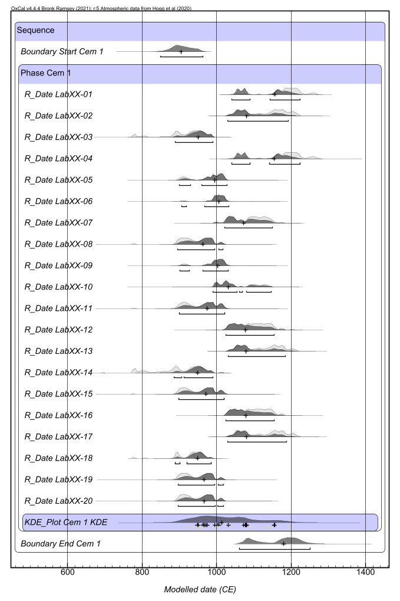
Figure 5.27: Plotting a phase model.
You’ll notice that each radiocarbon date is now described by two superimposed pdfs. In grey is the calibrated date (the “prior distribution”, because it was the information that we used as input for our model), and in black is the modeled result (the posterior distribution, because it is calculated by revising the priors according to model parameters). We have used few priors here, so the differences we’re seeing between prior and posterior distributions reflect only the effects of the bounded phase model: the early and late extremes are constrained, correcting for the scatter introduced by imprecision. We can best review the results for the phase as a whole by limiting the plot to just the key items. Return to the ‘Table’ window, and, using the check-boxes in the ‘Select’ column, select only the boundaries and the KDE_Plot. I like to change the colors of the boundaries as well, to distinguish them. The KDE is a modeled approximation of the distribution from which our dated events came (Bronk Ramsey 2017b) (a formal version of the stacked plot). The black ‘+’ below are the medians of the posterior distributions that go into it, and the grey ‘+’ below (hard to see on the blue background in the default color scheme) are the medians of the unmodeled dates. The boundaries are modeled estimates of the beginning and terminus of the parent distribution - remember that we’re using our dated events to try to reconstruct the population of dated events which we’ve sampled, which is to say all the potentially dateable events; in the case of our cemetery, all the interments. Like the pdf that described an individual calibrated date, these are curves describing the uncertainty with which we can estimate these dates. So, referencing Figure 5.28 and the ‘Table’ window, we can say with 95% confidence that our phase began between 850 and 965 CE (rounding a bit), and ended between 1060 and 1250 CE.
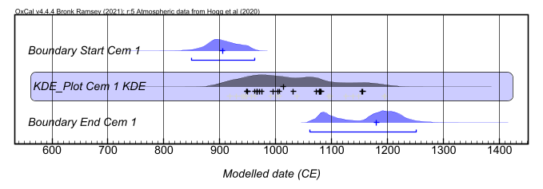
Figure 5.28: KDE and boundaries.
If you look at the results of the ‘Interval’ query in the ‘Table’ window, you’ll find that the 95% confidence interval is 113-381 years, with a median of 276 years. That is a corollary of the boundaries, and the phase model’s answer to our question of how long the cemetery was in use. It varies quite a bit for two reasons: we don’t have a huge number of samples, and we have no information with which to constrain the initial and terminal dates (no dated events that predate and postdate cemetery use). If we could add those, our estimate would get more precise.
How good are our results? Well, if we take the medians of the boundaries (not ideal for describing the bimodal distribution of the end boundary, but efficient), we’d say that our phase began around 900 CE and lasted until about 1180 CE. The end might come with a caveat: there’s a good chance that it’s about 90 years earlier; we can tell from the KDE that really there are only one or two dates that are pushing our end date forward. Knowing as we do that our initial dated events were sampled from a uniform distribution extending from 800-1100 CE, we can tell that we are victims of some bad luck in our sampling. We haven’t sampled any early burials, and we got one late date that seems to be the result of a radiocarbon age intersecting a wide calibrated range (see Figure 5.26; these are likely LabXX-02 and LabXX-04). The problem, of course, that if we weren’t working from simulated data, we’d have no way to know that our results were inaccurate - a good illustration of the kinds of uncertainties that are difficult to escape in any chronological model.
5.4.6 Introducing real-world complications
So far we have ignored a fundamental question, however: what have we dated?
The question of what we have dated is on its face a question about material: which materials - of the variety available, illustrated in Figure 5.4 - were sampled and sent for radiocarbon analysis? More fundamentally, it is a question about the relationship between target event and dated event. That is, a) what is the event whose date we are attempting to estimate, b) what is the event whose radiocarbon age is measured, and c) are (a) and (b) the same? Given the questions that we have framed about the cemetery, (a) is the moment of interment: we are hoping that the radiocarbon ages that we get on samples from various burials will tell us relatively precisely when those individuals were buried. What (b) is depends very much on the specific sample; it might match (a) closely, or vary by as much as centuries.
The problem is not unique to radiocarbon: typological dating of an interment can be confounded by the use of heirloom objects as burial goods, for example, while secondary burial and tomb-reentry are fundamentally challenges that should be met through methods of excavation (and documentation).
Three types of problems are most likely:
residence time
old wood
marine reservoir
- Note that the illustration of the carbon cycle (Figure 5.5) includes exchange between ocean and atmosphere. This exchange, because oceans constitute a much greater proportion of the southern hemisphere than the northern, is a contributor to the contrast in atmospheric \(^{14}C\) between hemispheres. The oceans (and other bodies of water, though we won’t cover freshwater here) contain “old” carbon, which is to say carbon >55kya, with no \(^{14}C\) remaining. Marine organisms
Three types of problems are likely: old wood, residence time, and recycling. The widely recognized old wood problem results when samples are derived from long-lived species of wood for which dates on inner rings may significantly predate (by centuries) its actual harvest and subsequent incorporation into cultural contexts. Problems of residence time stem from the persistence of organic materials on the landscape for significant spans of time after the death of the source, before incorporation into cultural contexts. This can potentially be very problematic in arid environments like Chicama where carbonized, woody, and/or even herbaceous tissue can preserve very well. Recycling problems result from reuse of organic materials originally incorporated into prior cultural contexts. While adobe bricks themselves are difficult to move and re-use, the unfired mud brick may be mined as raw material to fabricate new adobes. This ‘recycles’ older organics and mixes it with younger material, potentially creating unreliable ages.
Recall our two key questions:
- What is the event whose age we wish to know (the target event)?
- For which materials from this context might we be able to estimate an age using radiocarbon?
We can add a third crucial question:
3. What event will we be dating if we produce a radiocarbon age estimate of a particular material (the dated event)?
One of the basic principles of radiocarbon dating is that the dated event will be the moment when the organism ceased incorporating atmospheric carbon into tissue. That is generally glossed as the death of the organism (though reality can be messier).
What would be the likely dated events for the various materials in Burial 11/92? How do they relate to the moment of interment?
- ceramics may contain organic material (remnants of temper)
A radiocarbon date will give the date of harvest of any plant matter used as temper and/or absorbed organic residues. If the date is a bulk date (i.e., on all organic material in the sherd, combined), it will not be possible to tell which of these is contributing to the result.
- gourd (Lagenaria siceraria)
A radiocarbon date will give the date of harvest of the gourd.
- textile fragment
A radiocarbon date will give the date of harvest of the fibers used in manufacturing the textile. How long are fibers likely to be stored after harvest, and how long before incorporation into a burial are textiles likely to be manufactured? A textile produced for a funerary bundle will give a different date than a textile repurposed as a shroud…or an heirloom textile.
- wood (algarrobo, Prosopis pallida)
A radiocarbon date will give an average of the dates on which the growth rings that constitute the sample were formed. If an exterior ring is sampled and the trunk or branch was harvested while living, this will be the date of harvest. If interior rings are sampled and/or the wood was already dead when harvested and/or the wood was used for some span of time post-harvest but pre-burial, the dated event may be as much as centuries before interment.
- marine shell
- human bone
- camelid bone
- caña brava (Gynerium sagittatum)
A radiocarbon date will give the date of harvest of the cane.
- unidentified wood charcoal
A radiocarbon date will give an average of the dates on which the growth rings that constitute the sample were formed. If an exterior ring is dated and the trunk or branch was harvested while living, this will be the date of harvest. If interior rings are sampled and/or the wood was already dead when harvested and/or the wood was used for some span of time post-harvest but pre-carbonization and/or the burn event predated the burial event, the dated event may be as much as centuries before interment.
Understanding what the dated event is and assessing how it related to the target event is fundamental to accurate age estimates. If the difference between dated event and target event is known or can be estimated, then a radiocarbon determination can still produce a useful age estimate. If the difference between the two is unknown, then the radiocarbon determination can only provide an uncertain age estimate, one that accounts for the greatest possible offset between dated event and target event. example Suppose for example that we have XXXX
5.4.6.0.0.1 then introduce complications: dated event v. target event; residence time, old wood, marine reservoir, etc.
5.4.6.0.0.2 modeling approaches for this: misfits, outliers, and offsets; stratigraphic (and other) priors
No magic bullet…make arguments about which samples are most likely to match age of target event. And model results…because (Bayesian logic) we know more about the samples than just their radiocarbon age, and it would be silly not to incorporate that knowledge into our age estimates. Bayesian modeling is basically a tool for doing that formally. Need images of a) plan view of cemetery overall (distribution of interments), and b) an individual burial (illustration of dateable material).